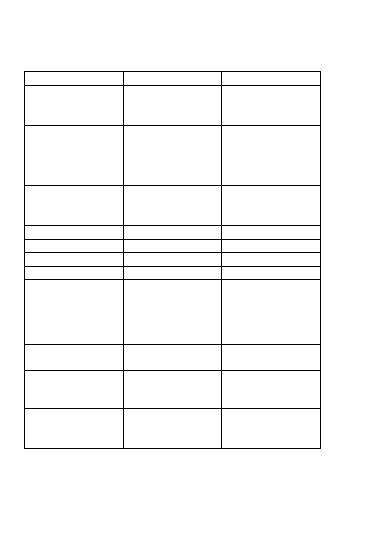

DHJÁNIBUDDHÙ
3.
4.
5.
Ratnasambhava
Amitábha
Amóghasiddhi
¾lutá
èervená
zelená
Plná lesku"
Bla¾enost"
Nahromadìní
nejlep¹ích skutkù",
resp. Dovr¹enost
nejlep¹ích skutkù"
¾lutá
èervená
zelená
zemì
oheò
vzduch
¾lutá
èervená
zelená
jih
západ
sever
klenot
lotos
dvojvad¾ra
kùò
páv
harpyje
Mámakí
Pándaravásiní
Samajatára
(m.) Áká¹agarbha
(m.) Avalókité¹vara
(m.) Vad¾rapáni
Samantabhadra
Maòd¾u¹rí
Sarvanivarana-
vi¹kambhin
(¾.) Mála
(¾.) Gíta
(¾.) Gandha
Dhúpa
Álóka
Nrtja
cítìní
vnímání
pøedstavivost
¾lutá
èervená
zelená
moudrost stejnosti
moudrost rozli¹ování
moudrost
uskuteèòování èinù
¾lutá
èervená
zelená
lidé
hladoví duchové
polobohové
matná modrá
matná ¾lutá
matná èervená
pýcha
chtíè
závist
247
[ |< ]
[ << ]
[ < ]
[ > ]
[ >> ]
[ >| ]
Strana 248